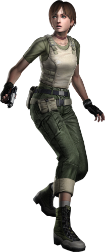

REBECCA CHAMBERS
The youngest member of S.T.A.R.S. Bravo Team, she is on assignment when the helicopter suffers a breakdown and is forced to make an emergency landing in the middle of the Raccoon forest. Rebecca is later found in the mansion where the Alpha Team ends up sheltering to escape the attack of the ferocious dogs, and despite her fragile and childlike appearance, the team's young nurse, who has a degree in biochemistry, is extremely determined and shows a lot of grit on her first official mission in the squadron.
